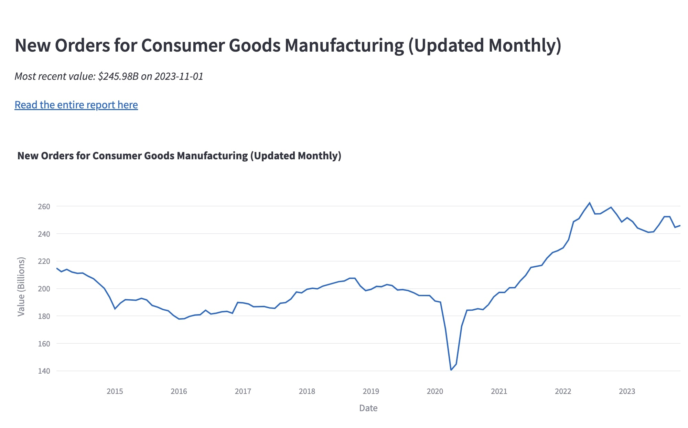
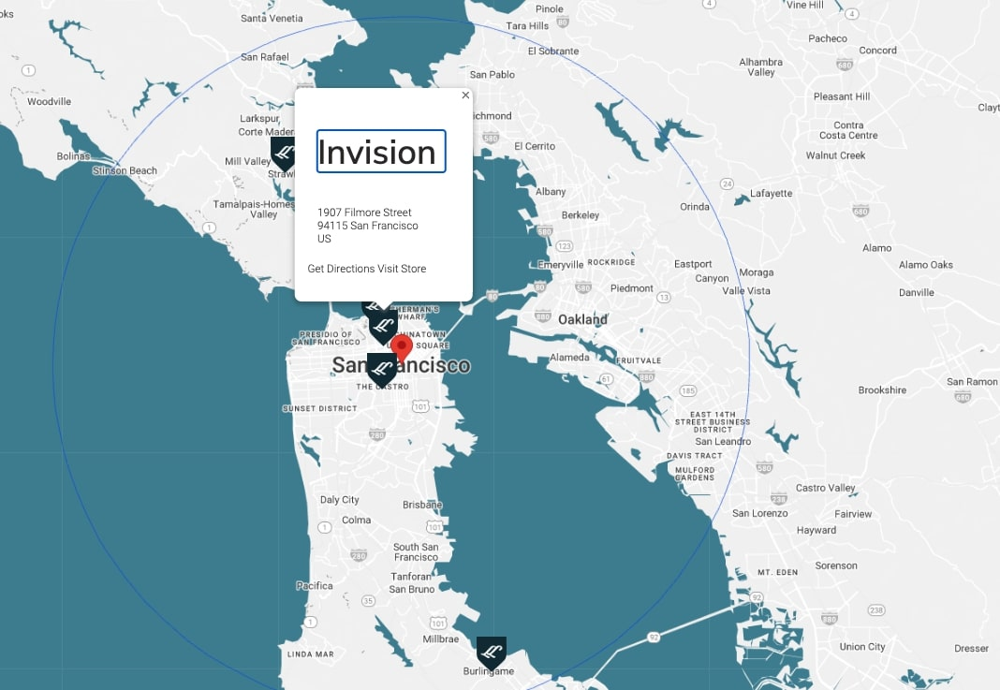

Real-Time Economic Indicators

Streamlit-based analytics dashboard visualizing real-time economic indicators
Technologies: Python, Streamlit, Cron, Plotly
Store Locator Web Scraper

Web scraper that aggregates and standardizes store locator data using string matching techniques
Technologies: Python, BeautifulSoup, Fuzzywuzzy
Territory Realignment Tool

Streamlit-based web app tool to realign sales territories and export newly-created territories as an excel file
Technologies: Python, Streamlit, Pandas